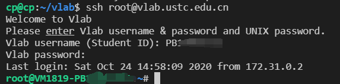

通过 SSH 命令行登录虚拟机¶
支持的虚拟机和客户端
SSH 登录方式支持 Linux LXC 虚拟机和 Linux KVM 虚拟机。
SSH 登录方式支持包括 Windows, macOS, Linux, iOS 和 Android 在内的客户端系统。
推荐使用公钥方式登录
详情请见下方公钥登录的段落。
从浏览器登录¶
2022 年 4 月，我们添加了网页登录 SSH 的功能，在虚拟机管理页面直接点击「网页 SSH 登录」即可。
登录用户与救援模式¶
默认以 root 用户登录。URL 中可以配置以其他用户登录：在 URL 中添加 unixusername 参数即可，例如虚拟机 1234 默认的 URL 为：
https://vlab.ustc.edu.cn/ssh/?username=:1234
如果需要以 ubuntu 用户登录，添加 unixusername 参数如下：
https://vlab.ustc.edu.cn/ssh/?username=:1234&unixusername=ubuntu
此外，救援模式对应的用户名为 recovery，因此可以通过网页版进入救援模式：
https://vlab.ustc.edu.cn/ssh/?username=:1234&unixusername=recovery
上传文件与下载文件¶
SSH 网页版支持文件拖动上传与文件下载。首先需要在虚拟机内安装 lrzsz 软件包：
sudo apt install lrzsz
安装后从本地拖动文件到浏览器窗口中即可上传。如需下载文件，使用 sz 命令。例如下载 yrcamp.jpg 文件：
sz yrcamp.jpg
输入命令后，浏览器窗口中会出现一个对话框显示文件名与文件大小，点击 Download 即可。
避免使用此功能上传/下载大文件
较大的文件请考虑使用网页版文件传输功能，或配置命令行 ssh 登录后，使用 scp 或 rsync 命令处理。
从命令行登录¶
macOS 自带命令行 SSH 客户端，同时绝大多数的 Linux 发行版也自带了 SSH 客户端。若你的 Linux 系统中没有 SSH 客户端（ssh 命令），请自行搜索资料安装，软件包的名称通常为 ssh、openssh 或 openssh-client 之一。
取决于你所选择的虚拟机镜像，SSH 的登录用户名可能为 root、ubuntu 或 vlab，或者你自己创建的用户名。打开操作系统提供的终端应用，输入命令（以 ubuntu 用户为例）：
ssh ubuntu@vlab.ustc.edu.cn
如果遇到 Warning，请输入 yes，然后根据提示输入 Vlab 平台的用户名和密码，即可登录虚拟机。出于安全考虑，输入密码的时候没有回显。

Windows 10 可以在系统设置中启用 OpenSSH 客户端，请参考微软的说明文档安装。
同时 Windows 平台也有各种 Linux / Unix 环境模拟软件，例如
你可以安装上述软件中的任何一种，然后参考“macOS 和 Linux”的使用说明。我们推荐使用 Git Bash 或者 WSL。
Android 系统可以从 Google Play 或者 F-Droid 获取 Termux 应用程序，然后使用 pkg install ssh 命令安装 SSH 客户端，然后参考“macOS 和 Linux”的使用说明。
使用公钥登录虚拟机（推荐）¶
使用公钥登录虚拟机可以免除每次输入密码的麻烦。
生成 SSH 密钥对并下载到本地¶
进入虚拟机管理界面，可以在自己虚拟机下方找到 SSH 密钥管理入口：
点击进入，即可通过点击 [生成新的 SSH 密钥对] 生成 SSH 密钥对：

此时公钥已经存储到 Vlab 平台上，只需要下载私钥并做一些配置就能利用密钥对进行免密登录。
点击 [下载私钥] 就能在下载文件中找到一个以 .pem 结尾的文件，这就是对应的 SSH 私钥。请妥善保管它，因为任何获得这个文件的人都能够登录你的虚拟机。
由于技术限制，每个虚拟机的私钥都是独立的。若你删除并重新创建了虚拟机，你需要重新生成密钥对才能使用密钥登录新的虚拟机。
将私钥移动至一个方便找到的地方，修改权限后即可用ssh登录。
Linux下操作：
例如私钥放在 ~/.ssh/vlab.pem
chmod 600 ~/.ssh/vlab.pem
ssh -i ~/.ssh/vlab.pem ubuntu@vlab.ustc.edu.cn
Windows下操作：
例如私钥放在 %HOMEPATH%/.ssh/vlab.pem
Windows下修改权限需右击私钥文件，属性->安全，确保只有你一个账号有对私钥文件的权限。
修改权限后可直接用ssh登录：
ssh -i %HOMEPATH%/.ssh/vlab.pem ubuntu@vlab.ustc.edu.cn
使用公钥
与传统的 SSH 公钥不同，使用公钥登录 Vlab 平台时，用户名可以在 root、ubuntu 或 vlab 中任意选择。若你使用了其他用户名，则你还需要输入虚拟机内对应用户的密码。
使用 PuTTY 客户端登录¶
安装 PuTTY¶
首先下载 PuTTY 客户端，然后双击打开，安装过程很简单，直接 [下一步] 到底即可。安装完成后，找到并打开 PuTTY，如图：

在 Host Name 一栏填入 vlab.ustc.edu.cn，端口号为 22（这是默认值），点击 Open，如图：

第一次连接时会提示你选择信任 Vlab 统一登录平台，点 Yes 即可：

部分 Linux 发行版的软件源里提供了 PuTTY 软件，可以直接从软件源安装，例如：
-
Ubuntu 和 Debian：
sudo apt-get install putty -
CentOS, Fedora 和 RHEL：
sudo yum install putty -
Arch Linux 和 Manjaro：
sudo pacman -S putty
安装完成后请参考 Windows 的使用说明来使用和配置 PuTTY。
使用密码登录虚拟机¶
连接到统一登录平台后，PuTTY 会要求你输入用户名和密码。取决于你所选择的虚拟机镜像，SSH 的登录用户名可能为 root、ubuntu 或 vlab，或者你自己创建的用户名。然后根据提示输入你的 Vlab 用户名和密码（输入的密码没有回显），按回车即可：
登录成功后即可使用虚拟机，如图：

PuTTY 还有一些高级的使用方法，例如你可以保存这些连接信息，以后可以更方便地连接虚拟机。这里有两篇不错的使用教程：
- https://www.hostarr.com/putty-tutorial/
- https://www.cnblogs.com/yuwentao/archive/2013/01/06/2846953.html
使用公钥登录虚拟机¶
将 .pem 格式的私钥转换为 .ppk 格式¶
由于 PuTTY 使用的私钥格式为其专用的 .ppk 格式，而不是更为通用的 PEM 格式，所以我们还要进行一步转换。转换私钥格式需要用到 PuTTYgen，即 PuTTY 的密钥生成与转换工具。一般在安装 PuTTY 时已包含它，如果你安装的 PuTTY 中未包含这个工具，请在这个页面直接下载 puttygen.exe。
首先参考使用公钥登录虚拟机一节下载 PEM 格式的公钥文件。在开始菜单的 PuTTY 文件夹下，或者 PuTTY 的安装目录下就能找到 PuTTYgen，打开后可以看到如下界面：
点击 Load 找到刚刚下载的 .pem 文件打开，然后点击 Save private key，选择一个合适目录保存生成的 .ppk 文件。同样地，请妥善保管这个私钥文件。
在 PuTTY 中设置私钥并保存会话信息¶
先到 Connection - Data 项设置自己的登录用户名（这里以 root 为例，你也可以使用 ubuntu 或 vlab，详情参见镜像配置），如图：

再点 SSH 项下面的 Auth，添加上一步转换得到的 .ppk 格式的私钥：

然后最重要的是回到最上面的 Session 项里保存，不然下次又得重新添加一遍。你可以为这个配置取一个容易辨别的名字，例如 vlab。
保存后每次登录时只需要双击之前保存的连接信息，就能免密登录你的虚拟机。
使用其他客户端登录¶
市面上还有诸如 XShell 和 Termius 等其他客户端，作为 SSH 客户端，它们的功能和使用方法大都相似，这里不再一一给出使用说明。
对于 Windows 操作系统，可以在这里下载 XShell 或 Termius。请参考各软件的使用说明来配置登录。其中 Termius 还有 macOS、Linux、iOS 和 Android 等多个系统的版本，具体请在 Termius 官网上查看。